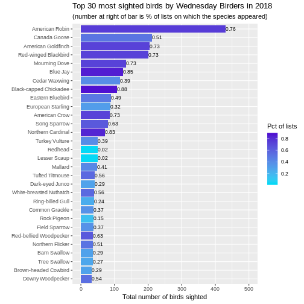
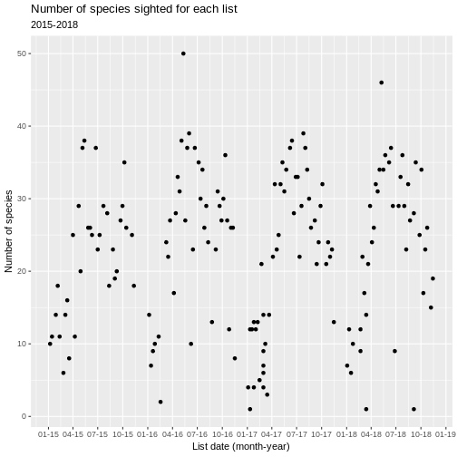
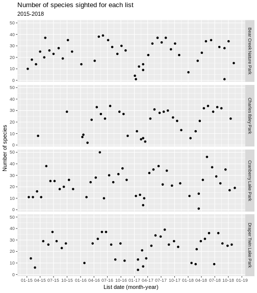
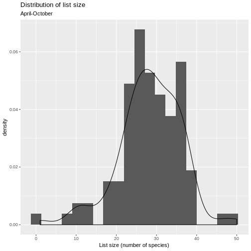
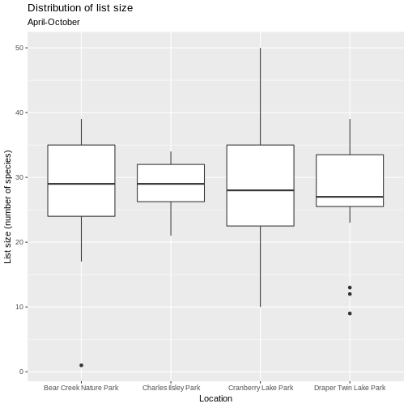
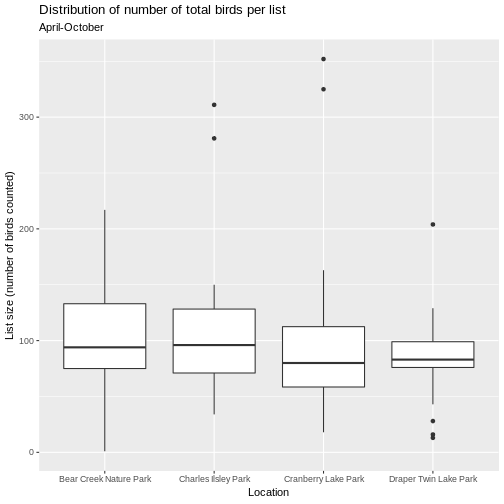
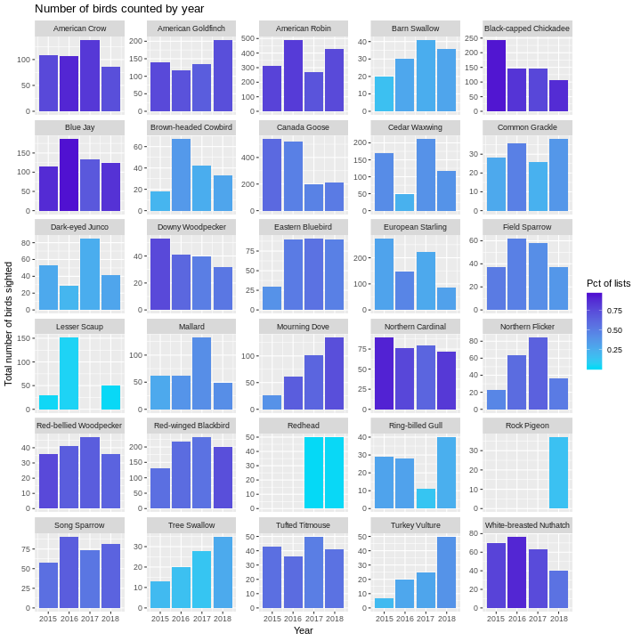
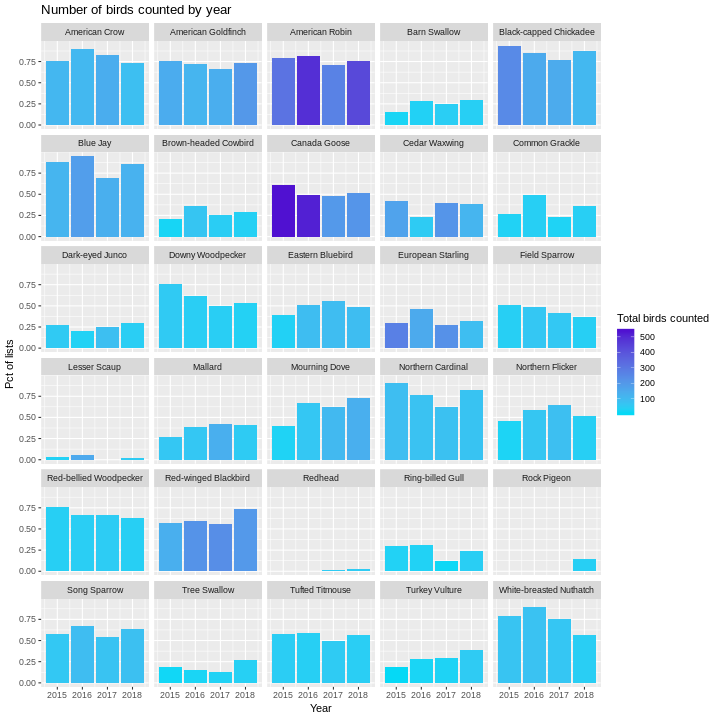

Wednesday Birders - 2018 stats and historical analysis using R¶
Using the eBird API from Python, we downloaded birding lists submitted by our Wednesday morning birding group. R was then used to produce various plots relating to counts of birds sighted and frequency of list appearance, by species.
The Wednesday Birders¶
In a previous post I described how I used a mix of Python and R to acquire, clean, and analyze eBird data from our birding group’s weekly walks. In this post, I’ll add plots for 2018 and do a little more analysis.
To summarize the basic approach (described in the first post), we:
used the eBird API (2.0) with Python to download data from our bird lists into a pandas dataframe and then exported to csv file,
used R to clean up the data to make sure we were just using our Wednesday Birders lists for the analysis,
used the R packages dplyr and ggplot2 to summarize and make plots of species counts by year.
Data prep¶
All of the data prep and analysis is done in R. We’ll need a few libraries:
library(dplyr)
library(ggplot2)
library(lubridate)
Before diving into analysis and plots, a little data prep was needed:
downloaded data from 2018 and converted the JSON to csv (used appropriately modified Python script detailed in first post)
read CSV file into an R dataframe
convert datetime fields to POSIXct
include only the lists from our Wednesday morning walks
combined the 2018 data with the data from 2015-1017 and saved as an RDS file
obs_df <- readRDS(file = "./data/observations.rds")
There are a bunch of fields in the observation records from eBird. Here’s just a sample focusing on the stuff we need. Each row in the data frame corresponds to an individual species count on a certain date in a certain location.
obs_df <- obs_df %>%
select(checklistId, obsDt, locName, comName, sciName, howMany, subId)
head(obs_df)
## checklistId obsDt locName comName
## 1 CL24105 2015-03-18 Charles Ilsley Park Canada Goose
## 2 CL24105 2015-03-18 Charles Ilsley Park Turkey Vulture
## 3 CL24105 2015-03-18 Charles Ilsley Park Red-tailed Hawk
## 4 CL24105 2015-03-18 Charles Ilsley Park Sandhill Crane
## 5 CL24105 2015-03-18 Charles Ilsley Park Red-bellied Woodpecker
## 6 CL24105 2015-03-18 Charles Ilsley Park Downy Woodpecker
## sciName howMany subId
## 1 Branta canadensis 2 S22414352
## 2 Cathartes aura 1 S22414352
## 3 Buteo jamaicensis 2 S22414352
## 4 Antigone canadensis 2 S22414352
## 5 Melanerpes carolinus 1 S22414352
## 6 Picoides pubescens 1 S22414352
Plots of Species Counts¶
How many birds of each species have we seen? How frequently are each species seen?
Let’s start with simple bar charts:
one bar per species, one year per graph,
bar length is number of birds seen,
color of bar is related to percentage of lists on which that species seen,
number at end of bar is percentage of lists on which that species seen.
Creating plots for 2018¶
The plots are easy to create from a dataframe that looks like this:
## comName birding_year num_lists tot_birds totlists
## 1 American Robin 2018 31 431 41
## 2 Canada Goose 2018 21 211 41
## 3 American Goldfinch 2018 30 204 41
## 4 Red-winged Blackbird 2018 30 200 41
## 5 Mourning Dove 2018 30 134 41
## 6 Blue Jay 2018 35 125 41
## 7 Cedar Waxwing 2018 16 116 41
## 8 Black-capped Chickadee 2018 36 107 41
## 9 Eastern Bluebird 2018 20 90 41
## 10 European Starling 2018 13 87 41
## 11 American Crow 2018 30 86 41
## 12 Song Sparrow 2018 26 81 41
## 13 Northern Cardinal 2018 34 72 41
## 14 Lesser Scaup 2018 1 50 41
## 15 Redhead 2018 1 50 41
## 16 Turkey Vulture 2018 16 50 41
## 17 Mallard 2018 17 49 41
## 18 Dark-eyed Junco 2018 12 41 41
## 19 Tufted Titmouse 2018 23 41 41
## 20 Ring-billed Gull 2018 10 40 41
## 21 White-breasted Nuthatch 2018 23 40 41
## 22 Common Grackle 2018 15 38 41
## 23 Field Sparrow 2018 15 37 41
## 24 Rock Pigeon 2018 6 37 41
## 25 Barn Swallow 2018 12 36 41
## 26 Northern Flicker 2018 21 36 41
## 27 Red-bellied Woodpecker 2018 26 36 41
## 28 Tree Swallow 2018 11 35 41
## 29 Brown-headed Cowbird 2018 12 33 41
## 30 Downy Woodpecker 2018 22 32 41
## pctlists
## 1 0.75609756
## 2 0.51219512
## 3 0.73170732
## 4 0.73170732
## 5 0.73170732
## 6 0.85365854
## 7 0.39024390
## 8 0.87804878
## 9 0.48780488
## 10 0.31707317
## 11 0.73170732
## 12 0.63414634
## 13 0.82926829
## 14 0.02439024
## 15 0.02439024
## 16 0.39024390
## 17 0.41463415
## 18 0.29268293
## 19 0.56097561
## 20 0.24390244
## 21 0.56097561
## 22 0.36585366
## 23 0.36585366
## 24 0.14634146
## 25 0.29268293
## 26 0.51219512
## 27 0.63414634
## 28 0.26829268
## 29 0.29268293
## 30 0.53658537
Here’s how you can make such a data frame.
# Create num species by list df
numsp_bylist <- obs_df %>%
group_by(year=year(obsDt), obsDt, locName, subId) %>%
summarize(
n = n(),
totbirds = sum(howMany)
) %>%
arrange(year, subId)
# Using numsp_bylist, create num lists by date
numlists_bydt <- numsp_bylist %>%
group_by(obsDt) %>%
summarise(
numlists = n()
) %>%
filter(numlists >= 1) %>%
arrange(obsDt)
# Usings numlists_bydt, create num lists by year
numlists_byyear <- numlists_bydt %>%
group_by(birding_year=year(obsDt)) %>%
summarise(
totlists = sum(numlists)
)
# Now ready to compute species by year
species_byyear <- obs_df %>%
group_by(comName, birding_year=year(obsDt)) %>%
summarize(
num_lists = n(),
tot_birds = sum(howMany)
) %>%
arrange(birding_year, desc(tot_birds))
# Join to numlists_byyear so we can compute pct of lists each species
# appeared in.
species_byyear <- left_join(species_byyear, numlists_byyear, by = 'birding_year')
bird_year <- 2018
top_obs_byyear <- species_byyear %>%
filter(birding_year == bird_year) %>%
mutate(pctlists = num_lists / totlists) %>%
arrange(desc(tot_birds)) %>%
head(30)
Make the plot.
ggplot(top_obs_byyear) +
geom_bar(aes(x=reorder(comName, tot_birds),
y=tot_birds, fill=pctlists), stat = "identity") +
scale_fill_gradient(low='#05D9F6', high='#5011D1') +
labs(x="",
y="Total number of birds sighted",
fill="Pct of lists",
title = paste0("Top 30 most sighted birds by Wednesday Birders in ", bird_year),
subtitle = "(number at right of bar is % of lists on which the species appeared)") +
coord_flip() +
geom_text(data=top_obs_byyear,
aes(x=reorder(comName,tot_birds),
y=tot_birds,
label=format(pctlists, digits = 1),
hjust=0
), size=3) + ylim(0,500)

Patterns and changes over time¶
Now that we have four full years of eBird sightings data from the four parks we visit each month, let’s see how things look over time (and location).
Here’s an overall time series plot of number of species appearing on each list.
numsp_bylist %>%
ggplot() + geom_point(aes(x = as.Date(obsDt), y = n)) +
ggtitle("Number of species sighted for each list", subtitle = "2015-2018") +
scale_x_date(date_breaks = "3 months",
date_labels = "%m-%y") +
xlab("List date (month-year)") +
ylab("Number of species")

Same plot but faceted by park.
numsp_bylist %>%
ggplot() + geom_point(aes(x = as.Date(obsDt), y = n)) +
facet_grid(locName ~ .) +
ggtitle("Number of species sighted for each list", subtitle = "2015-2018") +
scale_x_date(date_breaks = "3 months",
date_labels = "%m-%y") +
xlab("List date (month-year)") +
ylab("Number of species")

Let’s look at distribution of list size during the peak period of April-October.
numsp_bylist %>%
filter(month(obsDt) %in% 4:10) %>%
ggplot() + geom_histogram(aes(x = n, y = ..density..), bins = 20) +
ggtitle("Distribution of list size", subtitle = "April-October") +
xlab("List size (number of species)") +
geom_density(aes(x = n))

Use boxplots and group by park.
numsp_bylist %>%
filter(month(obsDt) %in% 4:10) %>%
ggplot() + geom_boxplot(aes(x = locName, y = n)) +
ggtitle("Distribution of list size", subtitle = "April-October") +
xlab("Location") + ylab("List size (number of species)")

Let’s repeat the above but using total number of birds counted per list instead of number of species per list.
numsp_bylist %>%
filter(month(obsDt) %in% 4:10) %>%
ggplot() + geom_boxplot(aes(x = locName, y = totbirds)) +
ggtitle("Distribution of number of total birds per list", subtitle = "April-October") +
xlab("Location") + ylab("List size (number of birds counted)")

Let’s look at time series plots of number of birds counted for each of the species in the Top 30 for 2018. We’ll need the following data frame to power the plots.
top_species_byyear <- top_obs_byyear %>%
select("comName") %>%
inner_join(species_byyear, by = "comName") %>%
mutate(pctlists = num_lists / totlists)
top_species_byyear
## # A tibble: 114 x 6
## # Groups: comName [30]
## comName birding_year num_lists tot_birds totlists pctlists
## <chr> <dbl> <int> <dbl> <int> <dbl>
## 1 American Robin 2015 26 313 33 0.788
## 2 American Robin 2016 32 491 39 0.821
## 3 American Robin 2017 34 269 48 0.708
## 4 American Robin 2018 31 431 41 0.756
## 5 Canada Goose 2015 20 538 33 0.606
## 6 Canada Goose 2016 19 518 39 0.487
## 7 Canada Goose 2017 23 200 48 0.479
## 8 Canada Goose 2018 21 211 41 0.512
## 9 American Goldfinch 2015 25 141 33 0.758
## 10 American Goldfinch 2016 28 116 39 0.718
## # ... with 104 more rows
Bar height is total number of birds counted and bar color is related to percentage of lists on which this bird appeared.
ggplot(top_species_byyear) +
geom_bar(aes(x = birding_year, y = tot_birds, fill=pctlists),
stat = "identity") +
scale_fill_gradient(low='#05D9F6', high='#5011D1') +
ggtitle("Number of birds counted by year") +
facet_wrap(~comName, ncol = 5, scales = "free_y") +
labs(x="Year",
y="Total number of birds sighted",
fill="Pct of lists")

A few things pop out:
overall number of Black-capped Chicadees counted has declined, though they are still sighted very frequently. Maybe we’ve become somewhat immune to their constant chatter and just aren’t recording as many. “Oh, just another chicadee.”
Downy Woodpecker sightings have declined both in terms of number and frequency as have White-breasted Nuthatch sightings.
Mourning Doves are up in both number and frequency.
After 2015, sightings of Eastern Bluebirds have been remarkably constant.
Now swap roles of total birds and frequency of appearing on a list. Bar height is percentage of lists on which this bird appeared and bar color is related to total number of birds counted.
ggplot(top_species_byyear) +
geom_bar(aes(x = birding_year, y = pctlists, fill = tot_birds),
stat = "identity") +
scale_fill_gradient(low='#05D9F6', high='#5011D1') +
ggtitle("Number of birds counted by year") +
facet_wrap(~comName, ncol = 5) +
labs(x="Year",
y="Pct of lists",
fill="Total birds counted")

Next steps¶
Now our group can try to make sense of these and I’m sure we’ll have ideas for more analysis. In my next post I’m going to explore those springtime favorites, the warblers.